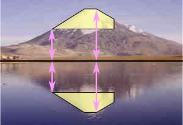
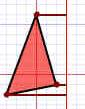
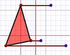
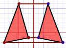
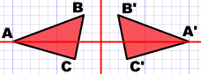
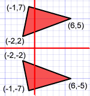
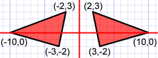

Reflection
Reflections are everywhere ... in mirrors, glass, and here in a lake.
... what do you notice ?


Every point is the same distance from the central line !
... and ...
The reflection has the same size as the original image.
The central line is called the mirror line:

Can A Mirror Line Be Vertical?

Yes. Here my dog "Flame" shows a vertical mirror line (with a bit of photo editing).
In fact mirror lines can be in any direction.
Imagine turning the top image in different directions:


A reflection is a flip over a line
You can try reflecting some shapes about different mirror lines here:
"How Do I Do It Myself?"
Just approach it step-by-step. For each corner of the shape:



Labels

It is common to label each corner with letters, and to use a little dash (called a Prime) to mark each corner of the reflected image.
Here the original is ABC and the reflected image is A'B'C'
Some Tricks
Imagine a point at (2, 5). If you reflect it across the x-axis (the horizontal line), which coordinate will change? The 2 or the 5?

X-Axis
When the mirror line is the x-axiswe change each (x,y) into (x,−y)

Y-Axis
When the mirror line is the y-axis
we change each (x,y) into (−x,y)
Fold the Paper
And when all else fails, just fold the sheet of paper along the mirror line and then hold it up to the light !